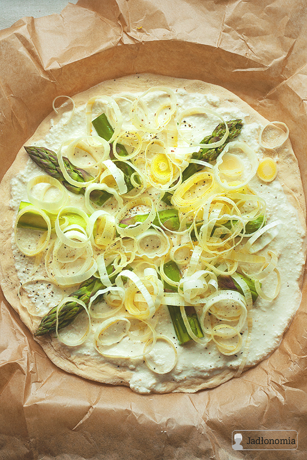

pizza

Składniki na dwie średnie pizze:
Przepis
- Kiedy minie czas wyrastania, ciasto podzielić na pół, rozwałkować na dwa cienkie placki i zostawić jeszcze na pół godziny. Piekarnik rozgrzać do 250 stopni.
- Migdały odcedzić, wsypać do pojemnika blendera, dodać pozostałe składniki na sos i wszystko zmiksować na gładki krem. Doprawić do smaku solą i pieprzem i odstawić na moment do lodówki.